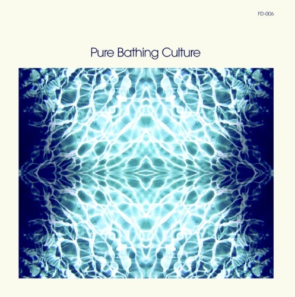
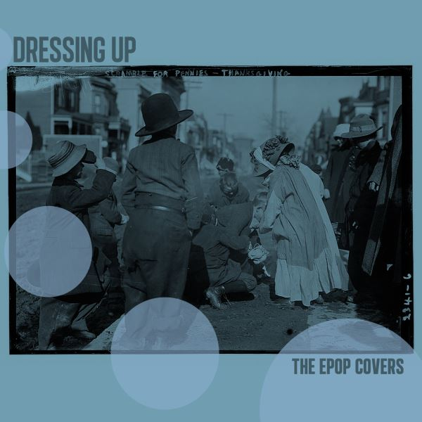
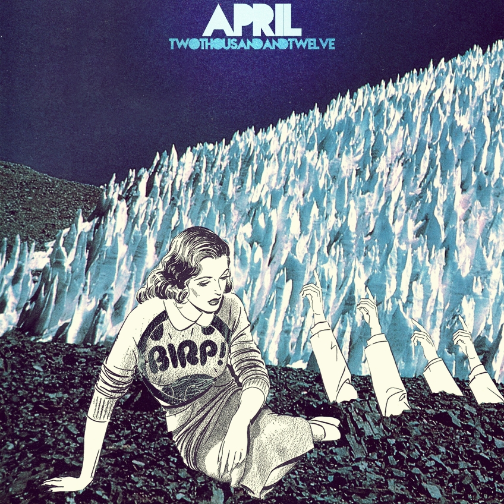
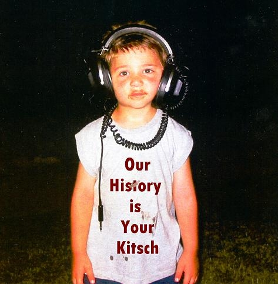
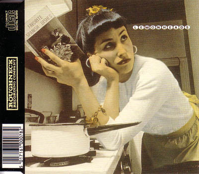
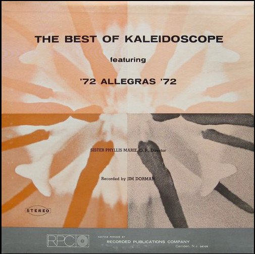

01
01
Two Out Of Three Ain't Bad
Jamey Johnson – The Imus Ranch Record II (2010)
orig. Meatloaf
 02
02
Please, please, please (let me get what I want)
ANT – EardrumsPop 100 (2012)
orig. The Smiths

03Dreams
Pure Bathing Culture – Rumours Revisited (2012)
orig. Fleetwood Mac

04Raspberry Beret
Butcher The Bar – Dressing Up - ePop Covers (2012)
orig. Prince

05Age of Consent
The Last Names – BIRP! April 2012 (2012)
orig. New Order
 06
06
Under The Milky Way
Sia – Under The Milky Way (2010)
orig. orig The Church
 07
07
Super Trouper
Camera Obscura – Tears For Affairs (2007)
orig. Abba
 08
08
Dancing in the Dark
Amy MacDonald – A Curious Thing (2010)
orig. Bruce Springsteen
 09
09
More Than This
Lucy Kaplansky – Over The Hills (2007)
orig. Roxy Music
 10
10
Love Will Tear Us Apart
Calexico – Sweetheart 2005: Love Songs (2005)
orig. Joy Division
 11
11
Im On Fire
Chromatics – In The City 12" (2007)
orig. Bruce Springsteen
 12
12
Thirteen
Garbage – b-sides (1998)
orig. Big Star
 13
13
Into the Black
Chromatics – Kill For Love (2012)
orig. Neil Young

14white wedding
The Harvey Girls – our history is your kitsch (2006)
orig. Billy Idol
 15
15
Who Do You Love
Museum of Bellas Artes – Who Do You Love (2009)
orig. Bo Diddley
 16
16
Perfect Day
The Jolly Boys – Great Expectation (2010)
orig. Lou Reed
 17
17
John, I'm Only Dancing
Vivian Girls – John, I'm Only Dancing - Single (2010)
orig. David Bowie
 18
18
Blister in the Sun
Nouvelle Vague – 3 (2009)
orig. The Violent Femmes

19Different Drum
Lemonheads – Favorite Spanish Dishes (1990)
orig. Michael Nesmith
 20
20
There Is a Light That Never Goes Out
Dum Dum Girls – He Gets Me High (2011)
orig. The Smiths
 21
21
Bohemian Rhapsody
We've Got A Fuzzbox And We're Gonna Use It !! – What's The Point (The Bostinous One) (1987)
orig. Queen

22We've Only Just Begun
The Allegras – The Best Of Kaleidoscope (1972)
orig. The Carpenters